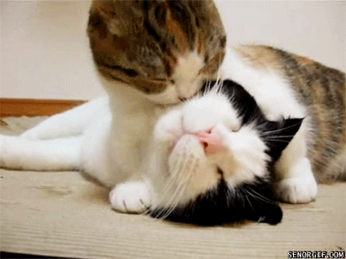
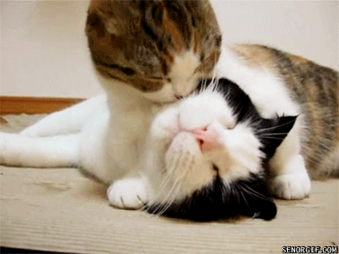
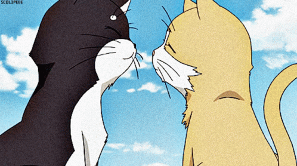
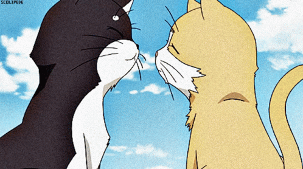

Факты о котиках

- В мире существует более чем 500 миллионов домашних котов.
- В каждом кошачьем ухе находится более чем 30 мускулов.
- В среднем, коты спят по 16-18 часов в день, что составляет более 70% кошачьей жизни.
- Кошки не чувствуют вкуса сладкого.
- У владельцев котов риск инсульта и сердечного приступа уменьшается в среднем на треть.
- Самая богатая кошка в мире владеет состоянием в 13 миллионов долларов. Эти деньги оставил ей в наследство умерший владелец.
- Коты часто страдают непереносимостью лактозы. Не давайте им молоко :)
- Коты могут издавать более чем 100 различных звуков, тогда как собаки — всего лишь около 10.
- У кошек и людей за управление эмоциональным состоянием отвечают одинаковые отделы головного мозга.
- Вопреки заблуждению, кошка не являлась священным животным в Древнем Египте. Тем не менее, убийство этих представителей семейства кошачьих каралось там законом. Коты контролировали и не давали расти внушительной популяции крыс.
- Коты могут прыгнуть на высоту, в 6 раз превышающую его длину.
- Первая кошка в космосе была француженкой. Ее звали Фелисетт, и она пережила полет.
- Нос котов имеет уникальный узор, как отпечаток человеческих пальцев.
- Хотя черный кот — символ неудачи во многих странах, в Великобритании и Австралии их считают символом удачи.
- Они очень милые :0
 

.gif) 
